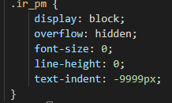
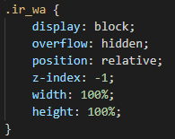
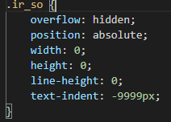
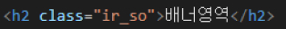

CSS IR 기법
IR (Image Replacement) 기법
IR 기법은 이미지를 볼 수 없는 사용자에게 적절한 대체 텍스트를 제공하는 것을 말합니다.
1. Phark Method
의미있는 이미지의 대체 텍스트를 제공하는 경우에 사용합니다.
이미지로 대체할 엘리먼트에 배경이미지를 설정하고 text_indent를 이용하여 화면 바깥으로 (-9999px) 빼내어 보이지 않게 하는 방법입니다.

2. WA IR
의미있는 이미지의 대체 텍스트로 이미지가 없어도 대체 텍스트를 보여주고 할 때 사용합니다.
이미지로 대체 할 엘리먼트에 배경이미지를 설정하고 글자는 span 태그로 감싼 후 z-index:-1을 이용하여 화면에 보이지 않게 처리합니다.

3. Screen out
대체 텍스트가 아닌 접근성을 위한 숨김 텍스트를 제공할 때 사용합니다.

사용 예시
